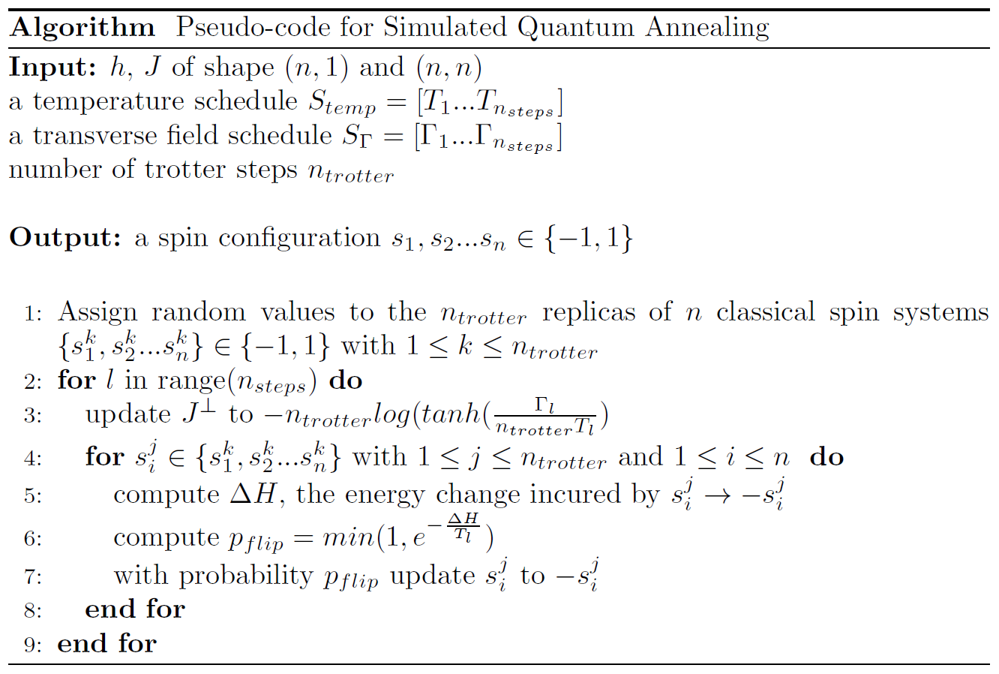

Combinatorial optimization
Many real life problems are combinatorial and solving them has actual practical applications. An intrinsic feature of these problems is that they can be formulated as minimization or maximization problems, i.e. with a cost function. At the same time finding the lowest energy of a physical system, represented by a cost Hamiltonian, is also a minimization problem. Due to this intimate relation, problems described with a cost function (QUBO) or a cost Hamiltonian (Ising) could be solved by simulating the process of finding their minimum energy. This lowest energy should encode the solution to our problem.
myQLM provides helper classes for both of these formulations, and also the more generic Combinatorial Problem, in which one can describe problems with clauses and variables - see the Formulating combinatorial problems section below.
Once the problems are encoded, one could solve them using a Quantum Approximate Optimization Algorithm (QAOA) or Simulated Annealing (SA). There are also tools to solve the problems via Simulated Quantum Annealing (SQA), but they come in the full QLM version.
Among the many different combinatorial problems, some of the most interesting and challenging ones are the NP-hard problems. A lot of effort has been put over the last 10-15 years into formulating such optimization problems as QUBO/Ising instances. See [Luc14] for an extensive reference. A direct encoding of some of these problems, described in the NP-hard problems section, has also been implemented on myQLM, along with example notebooks.
Formulating combinatorial problems
This section presents definitions of Ising Hamiltonians and QUBO cost functions, along with our conventions regarding their precise formulation (see also an introductory notebook). Here is the outline:
Ising Hamiltonians
Given \(n\) qubits, a 2-local Ising Hamiltonian is an operator of the form:
where \(\sigma_{z}^{i} = \begin{pmatrix}1 & 0 \\ 0 & -1 \end{pmatrix}\), \(h\) is a vector of real coefficients usually referred to as the local magnetic field, and \(J\) is a real symmetric matrix with a zero diagonal, usually referred to as the coupling matrix.
This Hamiltonian is the direct quantization of the following classical Ising cost function:
where \(s_{i}\in \{-1,1\}\).
Note
In the interaction term, we do not restrict the sum to, e.g., \(i < j\). This is to make the computation of the Ising cost function more straightforward to write using, for instance, standard numpy functions.
Note
For clarity and readability, we do not include any offset constant term in the definitions above. A definition including this term would be: \(- \sum_{i=1}^{n} h_{i}s_{i} - \sum_{i,j=1}^{n} J_{ij}s_{i}s_{j} + o\), with \(o\) the offset. Such a term does not change the optimization landscape, but might be needed if one wants to match values when converting Ising cost functions into QUBO instances and vice versa. See below for more details: QUBO.
Note
In the context of Ising Hamiltonians, qubits are also called spins.
Quantum annealing machines are typically designed to try and reach the minimum energy state of Ising Hamiltonians, also called ground state, relying on the Adiabatic Theorem. See for instance [AL18] for a general reference on adiabatic quantum computation.
Classical annealing codes like Simulated Quantum Annealing (SQA) try and do the same thing: Given \(h\) and \(J\) as input, they will, starting from a random configuration, try to apply updates, as part of Markov chain over the configuration space, in order to look for low energy states, where “energy” is defined by the formulas above.
Note
A coupling value \(J > 0\) between two spins \(\sigma_{i}\) and \(\sigma_{j}\) can sometimes be called, in our convention, a ferromagnetic coupling, as the alignment of the two spins onto a same value will tend to lower the energy of the system making it closer to its ground state.
In other words, quantum annealing machines and, consequently, classical annealing codes, SA, aim at tackling the following optimization problem:
given \(h\) and \(J\) as input.
To produce such Ising-formulated problems, one can use the qat.opt.Ising class. It is also possible to translate it to qat.opt.QUBO via to_qubo() or to CombinatorialProblem via to_combinatorial_problem().
Quadratic Unconstrained Binary Optimization (QUBO)
Quadratic Unconstrained Binary Optimization consists in, given a real symmetric matrix \(Q\), minimizing the following cost function \(q\):
where \(x_{1},...,x_{n}\in \{0,1\}\) are binary variables.
Written differently, by solving a QUBO problem, we mean solving, given \(Q\):
Note
The diagonal of \(Q\) is allowed to contain non-zero elements. Because \(\forall i \quad x_{i}\in\{0,1\}\), \(x_{i}^{2} = x_{i}\), and the diagonal terms in the sum above effectively correspond to a linear part of the cost function, which can be seen as similar to the magnetic field terms in Ising Hamiltonians.
QUBO instances are in one-to-one correspondance with Ising Hamiltonians and cost functions.
Indeed, starting from the expression above for \(q\), the QUBO cost function, and defining \(s_{i}=2x_{i}-1\) (\(\in \{-1,1\}\) as \(x_{i}\in\{0,1\}\)), i.e \(x_{i}=\frac{s_{i}+1}{2}\), one can indeed write:
with \(h_{i}=\sum_{j}\frac{Q_{i,j}}{2}\), \(J_{ij}=\frac{Q_{i,j}}{4}\) and an offset term \(o=- \sum_{i,j=1}^{n} \frac{Q_{i,j}}{4} - \sum_{i=1}^{n} \frac{Q_{i,i}}{4}\).
In this case, QUBO is the representative class and it can be translated to Ising and CombinatorialProblem via the to_ising() and to_combinatorial_problem(), respectively.
General combinatorial problems
The most general way to specify a combinatorial problem is by explicitly declaring boolean variables (Var) and clauses (Clause) combining these variables. This is achieved via the qat.opt.CombinatorialProblem class.
While Ising and QUBO only accept up to two-variable terms, one can define clauses in CombinatorialProblem with as many variables as desired. However, for the case of no more than two variables, a translation to the Ising and QUBO formulations is available using the to_ising() and to_qubo() methods.
The cost Hamiltonian extraction is handled by the Clause class such that the final cost Hamiltonian consists of the weighted sum of the cost Hamiltonian of its clauses.
Solving combinatorial problems
This section describes how to define and solve combinatorial problems using QLM tools. Here is the outline:
Quantum Approximate Optimization Algorithm (QAOA)
The Quantum Approximate Optimization Algorithm is a heuristic to design variational Ansätze for combinatorial optimization. It is inspired from the digitalization of an analog evolution using a linear ramp, starting from a simple initial Hamiltonian \(H_0 = - \sum_i \sigma_x^i\) to a diagonal Hamiltonian whose ground state encodes the solution to our problem.
The circuits produced by this method have the following shape:
where \(H_0 = - \sum_i \sigma_x^i\), and \(H_C\) is an (efficiently generated) classical cost Hamiltonian that encodes the cost function to optimize. The propagator \(e^{i\gamma H_C}\) is usually simple to implement from a problem specification. \(e^{i\beta H_0}\) simply corresponds to a collection of \(R_X\) rotations of angle \(2\beta\).
Once such a circuit is produced, one can use a QPU, along with a classical optimizer, to minimize the quantity: \(\langle 0|C(\gamma, \beta)^\dagger H_C C(\gamma, \beta)|0 \rangle\) in order to produce a quantum state with the lowest possible energy (i.e that overlaps well with the proper ground state of \(H_C\), which, by construction, corresponds to the optimal solution of our problem). This can be handled via a variational plugin in the QLM, see this section for more details.
As you can see, the circuit is also parametrized by a depth \(d\) corresponding to the number of alternating variational layers. The larger the depth, the better the approximation of the solution (at least in theory). In practice, increasing this parameter yields a larger circuit with greater number of parameters to optimize, which can slow down the convergence of the algorithm.
The algorithm is fully described in [FGG14].
It is possible to directly generate ready to run QAOA jobs (containing an Ansatz and the target Hamiltonian) from an instance of CombinatorialProblem/QUBO/Ising via the CircuitGenerator class. In that case the qlm will take care of generating a cost Hamiltonian for the problem (depending on how you specified it).
If you need a lower level interface, the qat.vsolve.ansatz.AnsatzFactory provides a recipe to produce such a variational circuit from a target Hamiltonian. In both cases, the Ansatz factory allows you to pick between (at least) three different circuit synthesis strategies, yielding functionally equivalent circuits with different shapes.
Simulated Annealing (SA)
Simulated annealing is a well-known, historical heuristic for combinatorial optimization. It aims at finding low energy-states of a classical Ising system with a Markov Chain over spin configurations, with decreasing stochasticity.
Stochasticity is specified by a temperature. In practice, a decreasing temperature schedule is given to the algorithm. At the beginning of the execution, large temperature values allow to jump over energy barriers to escape local optima. When temperature settles to lower values, the Markov chain will hopefully settle to the global optimum of the cost function.
Mathematically, simulated annealing tries to find, given \(h\) and \(J\), the global minimum configuration of:
It does so by first choosing a random configuration, which then evolves by applying updates. In the case of simulated annealing, an update consists in flipping the value \(s_{i}\) of a single spin.
An update is accepted with probability:
with \(\Delta H\) is the energy change incurred by switching from \(s_{i}\) to \(-s_{i}\). A change decreasing the energy of the system is always accepted, whereas a change which increases it needs a temperature high enough to have a non-negligible probability of being accepted.
The following picture explains in pseudo-code how simulated annealing works.

A basic example of the use of SA - to solve the Antiferromagnetic Ising Model, is presented in the notebook Getting started with SA. Some more involved examples where SA solves some of the NP-hard problems have also been implemented in the following notebooks.
Simulated Quantum Annealing (SQA)
Note
The Simulated Quantum Annealing is not available in myQLM. QUBO and Ising problems can still be used to construct QAOA Ansätze using the .qaoa_ansatz method or solved via Simulated Annealing.
Simulated quantum annealing provides a heuristic which aims to minimize quantum Ising Hamiltonians.
The questions of whether SQA performs such minimizations more efficiently than physical quantum annealing machines, and whether SQA can be called ‘emulation’ of those machines is a matter of hot scientific debate.
Settling these questions is of course beyond the scope of this documentation. The interested reader may look at: [RonnowWJ+14], [DBI+16], [HJA+15] or [AA17], for instance.
Formally, our SQA implementation is based on a discrete-time path integral Monte Carlo formulation of quantum annealing, as derivedF in [MartovnakST02].
In short, instead of sampling the equilibrium distribution, at finite temperature of the quantum Ising Hamiltonian:
one samples from the equivalent classical Ising Hamiltonian:
with \(J^{\perp} = - n_{trotters}\cdot \log\left(\tanh(\frac{\Gamma}{n_{trotters}T})\right)\) and \(n\) quantum spins are replaced with \(n_{trotters}\times n\) classical spins.
In quantum annealing, \(\Gamma\) is typically gradually decreased from a high value to \(0\), such that, if the system is prepared in the ground state of \(\sum_{i}\Gamma\sigma_{x}^{i}\), it ends up in the ground state of the Ising Hamiltonian at the end of the transition.
The idea of simulated quantum annealing is to sample from the equilibrium distribution of the equivalent classical Hamiltonian at several points \(\{\Gamma_{l}\}\) along that transition. The configuration resulting from sampling at \(\Gamma_{l}\) is kept at the starting configuration for \(\Gamma_{l+1}\).
The following picture describes in pseudo-code how the simulated quantum annealing works.
{kind=link}
Note
The memory requirements of simulated quantum annealing are polynomial in the number of spins. There is no hard memory limit as to how many spins can be represented and manipulated with this technique.
This SQA algorithm is implemented in the qat.sqa.SQAQPU. The quality of the solutions returned will depend on the parameters given to the algorithm (minimum and maximum gamma and temperature, number of Monte Carlo steps, etc). We provide a set of fine tuned parameters for common problem classes. The SQA solver was tested on the encoded NP-hard problems with various benchmarks and the respective performances were recorded. Along with the problem size and annealing times, the results are presented in the SQA Benchmarking and Performance section.
Quantum Annealing (QA)
Quantum Annealing is a generic optimization framework that utilizes a continuous quantum dynamic to find the global minimum of a target function. In practice, this framework is often applied to combinatorial optimization since combinatorial cost function are usually simple to encode into a Hamiltonian.
A generic quantum annealing is defined using a target Hamiltonian \(H_{C}\) such that:
encodes a cost function \(C\), and using a problem independent mixing Hamiltonian \(H_0\) such that:
The quantum system is prepared in the (problem independent) ground state of \(H_0\) and evolved slowly according the following time-dependent Hamiltonian:
during a time \(T\). For large \(T\), the adiabatic theorem states that the final quantum state will ‘largely’ overlap the ground state of \(H_C\). Thus, measuring this quantum state in the computational basis will produce the global minimum of \(C\) with large probability.
It is possible to automatically generate quantum annealing jobs from a any of the problem description classes descibed earlier. For instance, the following piece of code produces an annealing job for a MaxCut instance:
from qat.opt import MaxCut
import networkx as nx
graph = nx.generators.erdos_renyi_graph(10, 0.5)
problem = MaxCut(graph)
# We just need to specify the value of T (tmax)
annealing_job = problem.annealing_job(tmax=47)
The default mixing Hamitonian (\(H_0\)) is :
Its ground state is \(|+\rangle^{\otimes n}\) (a simple product state).
Some applications may require more advanced mixing Hamiltonians. QLM comes with a few mixing Hamiltonians already pre-programmed in a MixingFactory.
One can, for instance, define a bit-move mixing Hamiltonian that will mix the subspaces of constant Hamming weights. This is useful when one needs to restrict the search to bit-strings of fixed Hamming weight:
from qat.opt import MaxCut, MixingFactory
import networkx as nx
graph = nx.generators.erdos_renyi_graph(10, 0.5)
problem = MaxCut(graph)
# Looking for a solution of Hamming weight 3
mixing = MixingFactory.bit_move(10, 3)
annealing_job = problem.annealing_job(tmax=47, mixing=mixing)
<stdin>:8: DeprecationWarning: `np.complex` is a deprecated alias for the builtin `complex`. To silence this warning, use `complex` by itself. Doing this will not modify any behavior and is safe. If you specifically wanted the numpy scalar type, use `np.complex128` here.
Deprecated in NumPy 1.20; for more details and guidance: https://numpy.org/devdocs/release/1.20.0-notes.html#deprecations
Doing this will effectively change the mixing Hamiltonian, and, of course, the initial state of the computation. This change can lead to an increase in the computation time since some mixing Hamiltonians have non trivial ground states whose preparation might involve a problem independent annealing to take place before the true annealing.
Bibliography
- AL18
Tameem Albash and Daniel A Lidar. Adiabatic quantum computation. Reviews of Modern Physics, 90(1):015002, 2018. URL: https://journals.aps.org/rmp/abstract/10.1103/RevModPhys.90.015002.
- AA17
Evgeny Andriyash and Mohammad H Amin. Can quantum monte carlo simulate quantum annealing? 2017. arXiv:1703.09277.
- DBI+16
Vasil S Denchev, Sergio Boixo, Sergei V Isakov, Nan Ding, Ryan Babbush, Vadim Smelyanskiy, John Martinis, and Hartmut Neven. What is the computational value of finite-range tunneling? Physical Review X, 6(3):031015, 2016. URL: https://journals.aps.org/prx/abstract/10.1103/PhysRevX.6.031015.
- FGG14
Edward Farhi, Jeffrey Goldstone, and Sam Gutmann. A quantum approximate optimization algorithm. 2014. arXiv:1411.4028.
- HJA+15
Itay Hen, Joshua Job, Tameem Albash, Troels F Rønnow, Matthias Troyer, and Daniel A Lidar. Probing for quantum speedup in spin-glass problems with planted solutions. Physical Review A, 92(4):042325, 2015. URL: https://journals.aps.org/pra/abstract/10.1103/PhysRevA.92.042325.
- Luc14(1,2)
Andrew Lucas. Ising formulations of many np problems. Frontiers in Physics, 2:5, 2014. URL: https://www.frontiersin.org/articles/10.3389/fphy.2014.00005/full.
- MartovnakST02
Roman Martoňák, Giuseppe E Santoro, and Erio Tosatti. Quantum annealing by the path-integral monte carlo method: the two-dimensional random ising model. Physical Review B, 66(9):094203, 2002. URL: https://journals.aps.org/prb/abstract/10.1103/PhysRevB.66.094203.
- RonnowWJ+14
Troels F Rønnow, Zhihui Wang, Joshua Job, Sergio Boixo, Sergei V Isakov, David Wecker, John M Martinis, Daniel A Lidar, and Matthias Troyer. Defining and detecting quantum speedup. science, 345(6195):420–424, 2014. URL: https://science.sciencemag.org/content/345/6195/420.full.